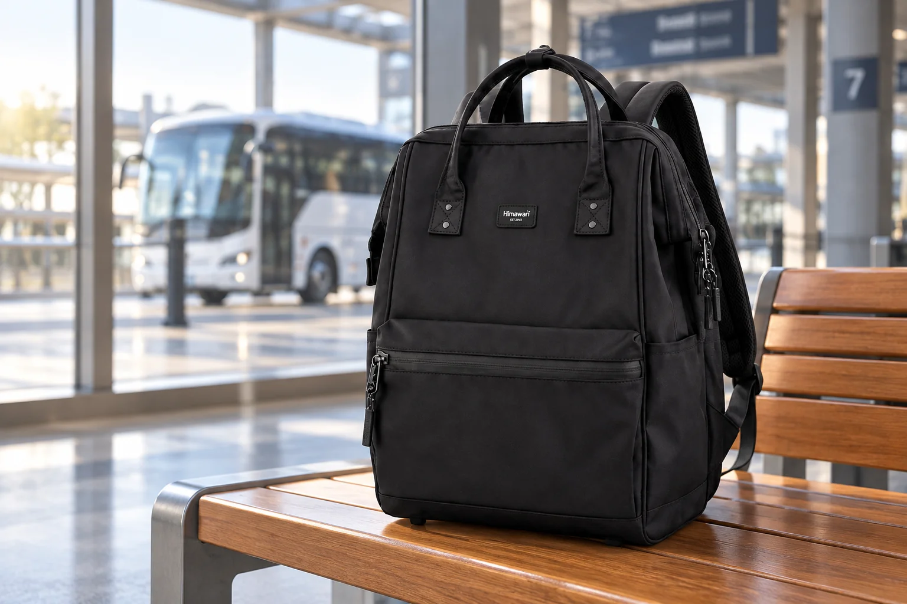

시외버스 여행의 백팩: 탑승·휴게소·하차를 나눠 준비하기

시외버스로 이동하는 날은 기차와 달리 휴게소 정차나 중간 하차 여부를 확인해야 할 수 있습니다. 버스 안에서 물건을 자주 꺼내려면 좌석 주변에서 가방을 계속 열게 됩니다. 그렇다고 전부 손에 들고 타면 내릴 때 놓고 가기 쉽습니다. 예매 정보와 운행 안내를 먼저 확인하고, 탑승 전·이동 중·하차 후 필요한 것을 세 번의 장면으로 나누면 짐이 한결 명확해집니다.
터미널에서 승차 정보와 물건 위치를 함께 확인합니다
승차 홈과 출발 시각, 좌석을 확인할 때 표나 모바일 승차권을 바로 찾을 자리도 정합니다. 휴대전화와 지갑, 신분 확인에 필요한 물건은 깊은 메인 공간보다 손이 닿는 안전한 곳에 두세요. 종이표를 쓰는 경우 가방 바닥에서 구겨지지 않게 별도 케이스에 넣습니다. 버스 회사와 노선에 따라 수하물과 좌석 반입 안내가 다를 수 있으니 해당 운행사의 기준을 우선 확인합니다.
차 안에서 쓸 것만 작은 묶음으로 남깁니다
이어폰, 작은 책, 물티슈처럼 탑승 중 쓸 물건을 미리 작은 파우치로 묶어두면 좌석에서 가방 전체를 열 필요가 줄어듭니다. 물이나 간식의 반입 및 취식 안내는 운행사 지침을 따릅니다. 전자기기는 꺼진 상태와 보관 위치를 확인하고, 충전 케이블을 통로나 옆 좌석까지 늘어뜨리지 않습니다. 큰 물건을 억지로 발밑에 밀어 넣거나 비상구와 통로를 막지 않도록 버스의 수납 안내에 맞게 둡니다.
휴게소 정차 때는 시간을 먼저 봅니다
휴게소에 서는 노선이라면 정차 시간과 다시 탈 위치를 운전기사 또는 안내 방송으로 확인하세요. 짧은 정차에서 가방 전체를 펼쳐 필요한 것을 찾기 시작하면 돌아갈 시간이 빠듯해집니다. 개인 소지품과 승차에 필요한 물건은 손에 챙기고, 나머지 짐을 두어도 되는지 운행사 안내를 따릅니다. 차량 번호와 주차 위치를 기억하되, 다른 승객의 가방과 뒤섞이지 않도록 자신의 가방 외형도 확인합니다.
내리기 전에는 좌석 주변을 순서대로 봅니다
목적지에 가까워지면 열린 포켓과 파우치를 닫고, 좌석 주머니·발밑·옆 좌석을 차례로 살핍니다. 충전 중인 기기나 이어폰처럼 몸에서 떨어져 있던 물건을 먼저 회수하세요. 머리 위 선반이나 별도 보관 공간에 짐을 뒀다면 차량이 완전히 정차한 뒤 주변 사람을 살피며 꺼냅니다. 내린 후에도 버스 번호와 목적지를 확인해 맡긴 짐이 있다면 본인 물건인지 대조합니다.
직장용 백팩을 여행에 쓸 때
대표 사진은 실제 Himawari No.1884 블랙 제품 외형을 참조해 터미널에서 연출했습니다. 사진은 버스 반입 가능 크기나 수납량을 증명하지 않습니다. 노트북을 가져가는 일정이라면 기기 크기와 가방 수납 공간을 직접 대조하고, 이동 중 무리한 압박을 피하세요. 업무용 소지품과 여행용 소품을 섞어 담기보다 버스 안에서 열 물건만 따로 묶으면 하차 후 가방을 다시 정리하기도 쉽습니다.
참고·안내
- Himawari No.1884 제품 정보
- 실제 Himawari No.1884 블랙 제품 사진을 참조해 만든 AI 연출 이미지입니다. 터미널 배경은 연출이며 버스 반입 기준이나 제품 수납량을 보증하지 않습니다.
자주 묻는 질문
휴게소에 내릴 때 백팩을 차에 두어도 되나요?
운행사 안내와 개인 소지품의 중요도를 기준으로 판단하세요. 휴대전화, 지갑, 승차에 필요한 물건은 직접 챙기는 편이 좋습니다.
버스 좌석 아래에 백팩이 들어갈까요?
차종과 좌석 구조, 실제 가방 크기에 따라 다릅니다. 운행사 수하물 규정과 버스의 수납 안내를 확인하세요.